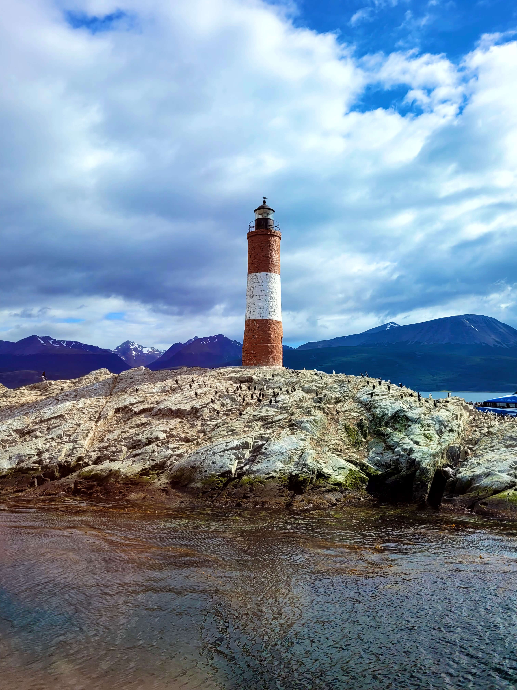

¿Querés estar en Modo Ushuaia ?
¡Reservá tu lugar!Conociendo lugares, uniendo personas
¡VIVE PATAGONIA es tu mejor opción para conocer Tierra del Fuego!

Laguna Esmeralda
Excursión con guía

Parque Nacional
No incluye entrada al parque

Aventura Lagos
Almuerzo incluido, sin bebida

Aventura Lagos con Cabalgata
Guía en español e inglés
Lobos
Navegación, Canal de Beagle

Navegación
No incluye traslado hacia o desde el puerto al alojamiento.

Vive Tolhuin
No incluye almuerzo.
Vive Almanza
No incluye almuerzo.

Parque Nacional con Remo
.

Aventura Lagos: Cuatriciclos/Moto de nieve 4KM
Incluye almuerzo
Nuestra flota
Viajá cómodo y seguro con nuestra moderna flota,
diseñada para tu confort en cada viaje.